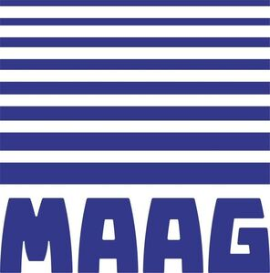

Trade Mark Journal No.2026/005 30 January 2026
WO0000001882104 (7,9,37)
Office of origin: European Union Intellectual Property Office (EUIPO)
Date of International Registration:29 May 2025
Date of designation in the UK:
29 May 2025

Dark blue.
- Class 7
- Machines and machine tools for treatment of materials and for manufacturing; agricultural, earthmoving, construction, oil and gas extraction and mining equipment; machine coupling components, except for land vehicles; shaft couplings as parts of machines; fluid couplings being parts of machines; valves [parts of machines]; wheels and tracks for machines; machine wheels; gear wheels for machines; toothed wheels for driving chains [parts of machines]; power transmission parts [other than for land vehicles]; electric propulsion mechanisms for machines; gear units for power transmissions, other than for land vehicles; electric driving motors for machines; drive pulleys; drive mechanisms; motor drive units [other than for land vehicles]; driving devices for machines; power transmissions and gearing for machines [not for land vehicles]; driving motors, other than for land vehicles; cam drive systems for internal combustion engines; propeller shafts; gear pumps; gear train parts, other than for land vehicles; gear units, other than for land vehicles; gear couplings for machines; hydraulic transmissions, other than for land vehicles; transmission mechanisms, other than for land vehicles; transmission control mechanisms; transmissions for machines.
- Class 9
- Apparatus and instruments for controlling electricity; apparatus, instruments and cables for electricity; electrical and electronic components; measuring, detecting, monitoring and controlling devices; safety, security, protection and signalling devices; controllers and regulators; sensors, detectors and monitoring instruments; electric control apparatus; control installations (electric -); regulating apparatus, electric; monitoring apparatus, other than for medical purposes; none of the above for inspection, quality control, defect detection and calendering machinery for textiles.
- Class 37
- Reconditioning machines, motors and engines that have been worn or partially destroyed; rebuilding machines that have been worn or partially destroyed; maintenance and repair of gears; repair of machines; cleaning of machines; installation of plant; renovation of machinery; overhaul of machines; installation of industrial machinery; repair of industrial machinery.
"MAAG GEAR" SPÓŁKA Z OGRANICZONĄ ODPOWIEDZIALNOŚCIĄ
Representative: JWP RZECZNICY PATENTOWI DOROTA RZĄŻEWSKA SP. K., ul. Mińska 75, PL-03-828 Warszawa, POLAND